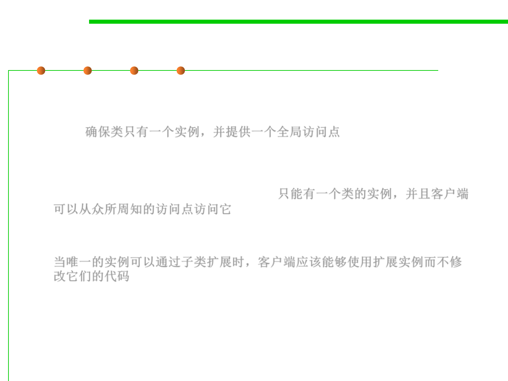

8.3 Code Tuning for Performance Optimization
Singleton pattern 单例模式
▪ Intent
– Ensure a class only has one instance, and provide a global point of access
to it. 确保类只有一个实例，并提供一个全局访问点
▪ Applicability
– There must be exactly one instance of a class, and it must be accessible to
clients from a well-known access point. 只能有一个类的实例，并且客户端
可以从众所周知的访问点访问它
– When the sole instance should be extensible by subclassing, and clients
should be able to use an extended instance without modifying their code.
当唯一的实例可以通过子类扩展时，客户端应该能够使用扩展实例而不修
改它们的代码